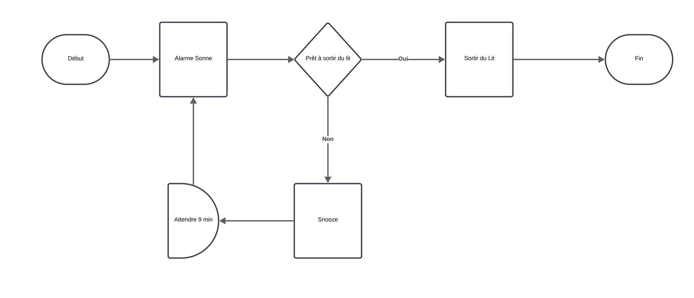

Les organigrammes (Flowcharts)
Objectif
Les organigrammes, ou flowcharts, sont des diagrammes qui illustrent visuellement les étapes séquentielles d'un processus, d'un système ou d'un algorithme informatique. Ils sont utilisés pour documenter, analyser, planifier, améliorer et communiquer des processus complexes de manière claire et concise.
Cas principaux d’utilisation
-
Documentation des processus :
- Fournir une représentation visuelle des étapes d'un processus pour une meilleure compréhension et communication.
-
Analyse et amélioration des processus :
- Identifier les inefficacités, les redondances ou les goulets d'étranglement dans un processus existant.
-
Planification et conception :
- Élaborer de nouveaux processus ou systèmes en définissant clairement chaque étape nécessaire.
-
Formation et éducation :
- Aider à expliquer des procédures complexes aux nouveaux employés ou aux étudiants.
-
Programmation informatique :
- Visualiser la logique d'un algorithme ou d'un programme avant son codage.
Composants principaux
1. Symboles de base
-
Ovale (Terminaison) :
- Définition : Indique le début ou la fin d'un processus.
- Utilisation : Placé aux points de départ et de conclusion de l'organigramme.
-
Rectangle (Processus) :
- Définition : Représente une étape ou une action spécifique dans le processus.
- Utilisation : Utilisé pour décrire une opération ou une tâche.
-
Losange (Décision) :
- Définition : Indique un point où une décision doit être prise, menant à des chemins différents.
- Utilisation : Utilisé pour représenter des questions oui/non ou vrai/faux.
-
Parallélogramme (Entrée/Sortie) :
- Définition : Représente l'entrée de données dans le système ou la sortie de résultats.
- Utilisation : Utilisé pour montrer les points où des informations sont introduites ou extraites.
-
Flèches (Flux de contrôle) :
- Définition : Indiquent la direction du flux entre les étapes du processus.
- Utilisation : Connectent les différents symboles pour montrer la progression.
Résumé des symboles

Flowchart basique

2. Connecteurs
-
Connecteur sur page :
- Définition : Petit cercle utilisé pour connecter des parties de l'organigramme sur la même page.
- Utilisation : Simplifie les diagrammes complexes en évitant des lignes croisées.
-
Connecteur hors page :
- Définition : Symbole en forme de pentagone utilisé pour indiquer que le flux continue sur une autre page.
- Utilisation : Utilisé dans des organigrammes étendus sur plusieurs pages.
3. Swimlanes (Couloirs)
- Définition :
- Divisions horizontales ou verticales de l'organigramme qui attribuent des étapes spécifiques à différentes unités, départements ou acteurs.
- Utilisation :
- Clarifient les responsabilités et les rôles dans un processus, montrant qui est responsable de chaque étape.
Structure et présentation d’un organigramme
-
Définir le processus :
- Identifier clairement le processus à modéliser, ses limites, son début et sa fin.
-
Lister les étapes :
- Énumérer toutes les étapes nécessaires du processus dans l'ordre séquentiel.
-
Déterminer les décisions :
- Identifier les points où des décisions sont prises et les résultats possibles de ces décisions.
-
Dessiner le diagramme :
- Utiliser les symboles appropriés pour représenter chaque étape et décision.
- Connecter les symboles avec des flèches pour indiquer le flux du processus.
-
Vérifier et valider :
- Examiner l'organigramme pour s'assurer de sa précision et de sa clarté.
- Le faire réviser par les parties prenantes concernées pour validation.
Résumé
Les organigrammes sont des outils précieux pour visualiser et comprendre les processus complexes. En fournissant une représentation graphique des étapes séquentielles et des décisions, ils facilitent la communication, l'analyse et l'amélioration des processus dans divers domaines, de l'ingénierie logicielle à la gestion des opérations.